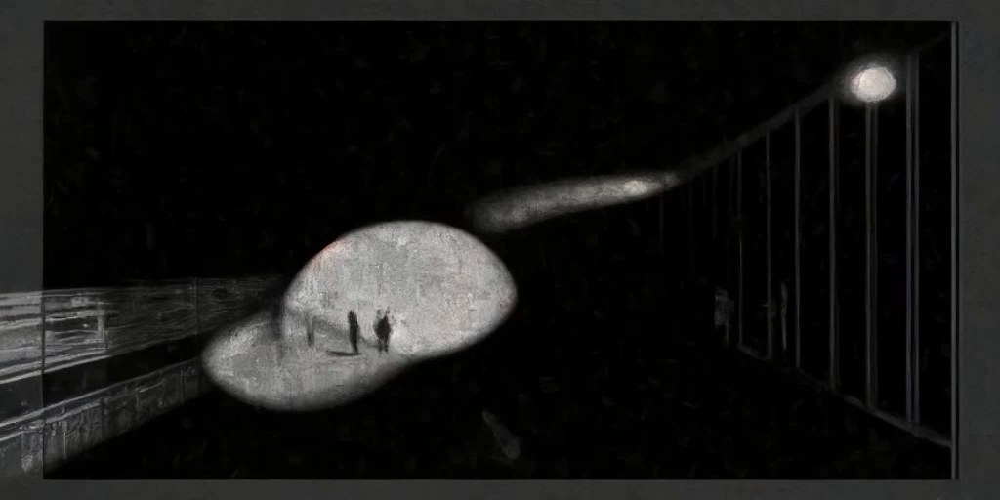
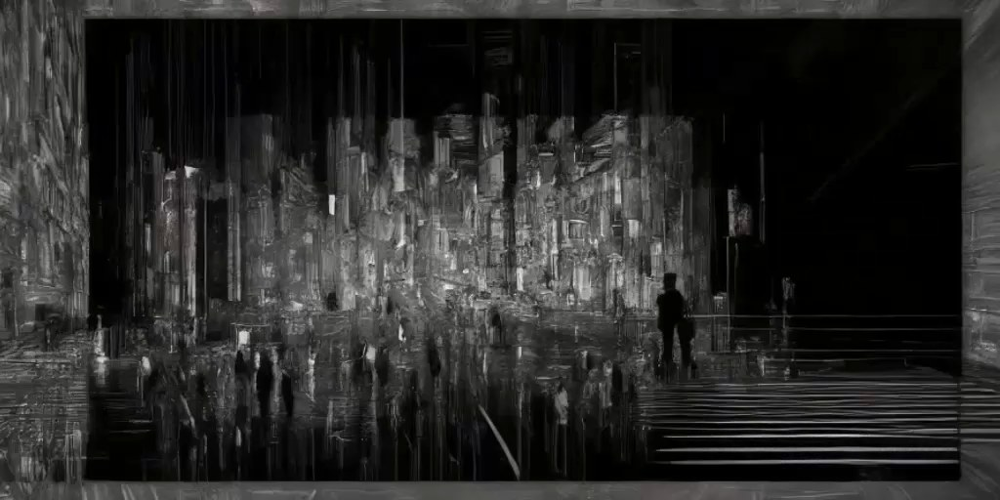
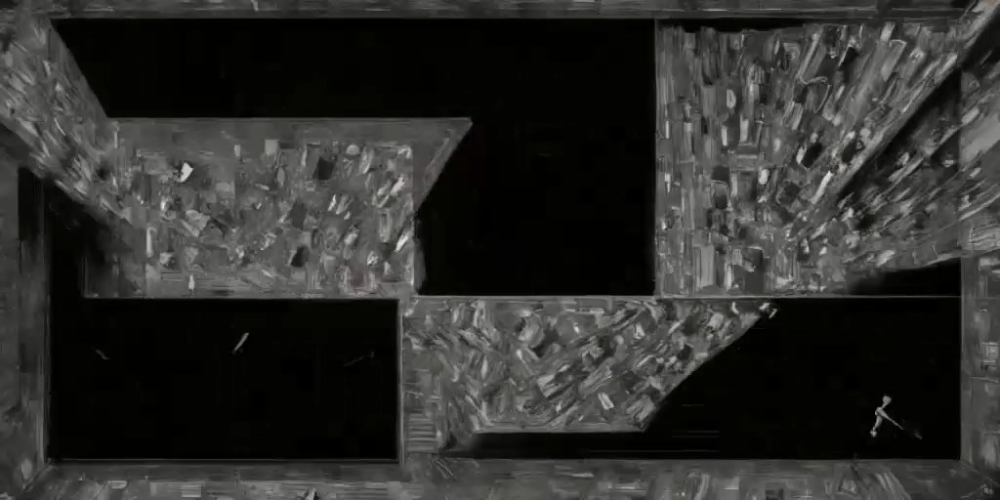
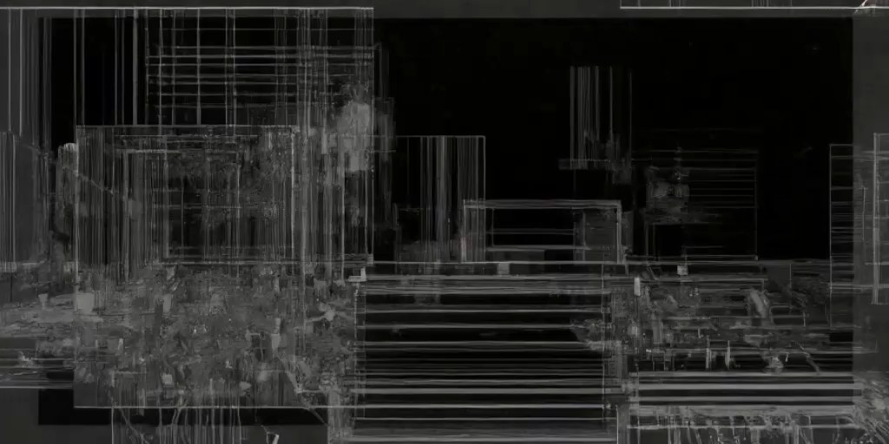

05 — 2024 — Audio-reactive generative video · short study
Soundscape City音景城市
以十段日常錄音生成的城市影像。A city image generated from ten everyday field recordings.
本影片含聲音，可由播放列開啟。
十段日常錄音，包括新竹六樓的風聲、高雄燈塔與南寮漁港的海浪，先於 Reaper 中擷取節奏點。每個節奏點在格狀地圖上生成一個量體，聲音由此在 TouchDesigner 中堆疊為城市。
Ten everyday recordings, including wind on a sixth floor in Hsinchu, a lighthouse in Kaohsiung and waves at Nanliao Harbour, are edited in Reaper to extract their percussive onsets. Each onset raises a block on a grid, building up a city in TouchDesigner.
系統另設計為可接收語音關鍵字：經語音辨識取得詞語後，由 StreamDiffusion 依詞語重新生成城市影像，使不同時間、地點的錄音疊合於同一畫面。
The system was also designed to accept spoken keywords: speech recognition extracts the words, and StreamDiffusion regenerates the city image accordingly, layering recordings from different times and places into a single image.




- Medium
- Ten field recordings, Reaper, TouchDesigner, speech recognition, StreamDiffusion
- Format
- Single-channel generative video
- Role
- Concept, sound editing, TouchDesigner system, AI pipeline (solo)
- Year
- 2024
- Sound
- Field recording, Reaper editing, onset extraction
- Visual
- TouchDesigner grid-city generator
- AI
- Speech recognition → StreamDiffusion (TouchDesigner integration)
- Period
- Apr–Jun 2024